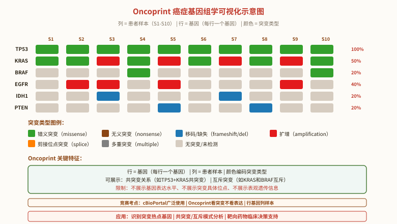

生物信息学基础 (Bioinformatics)
一、生物信息学概述
生物信息学（Bioinformatics）是生物学与信息学、计算机科学、数学、统计学交叉的新兴学科。其核心任务是从海量的生物数据（DNA/RNA/蛋白质序列、基因组、转录组、蛋白质组、代谢组、表型组等）中提取、储存、分析、传递生物信息，揭示数据背后的生物学意义。
生物信息学的三大目标：
- ①数据管理：构建和维护生物数据库（GenBank、PDB、UniProt、Ensembl、UCSC Genome Browser），使全球研究者可访问、共享、下载。
- ②数据分析：开发算法和工具进行序列比对、基因预测、蛋白结构预测、系统发育分析、基因表达分析等。
- ③知识发现：从数据中提炼出可被实验验证的生物学假设（如新基因功能、药物靶点、疾病机制）。
生物信息学发展简史：
- 1960s：Margaret Dayhoff 构建第一部蛋白质序列数据库（Atlas of Protein Sequence and Structure），并首创 PAM 替换矩阵（1978）。
- 1970s：Sanger 测序技术成熟（1977），第一批基因组（噬菌体 φX174）测序完成。
- 1980s：GenBank 数据库建立（1982）。Smith-Waterman 局部比对算法（1981）、Needleman-Wunsch 全局比对算法（1970）成为基础。
- 1990s：人类基因组计划启动（1990）。BLAST 算法（Altschul et al. 1990）成为序列比对标配工具。FASTA 算法（Pearson & Lipman 1988）。
- 2000s：人类基因组草图（2001）、完成图（2003）。BLAST 工具遍布全网。多组学（omics）数据爆发。
- 2010s：二代测序（NGS）普及，单细胞测序（2014-），CRISPR-Cas9 基因编辑（2012-2013 诺贝尔奖 2020）。AlphaFold（2020）开启 AI 蛋白质结构预测时代。
- 2020s：AlphaFold2（2021）、AlphaFold-Multimer（2024）、ESMFold、RoseTTAFold 等 AI 模型使蛋白质结构预测达到实验级精度；大语言模型（BioGPT、Med-PaLM）开始用于生物医学。
二、主要生物信息学数据库
主要生物信息学数据库（按数据类型分类）：
- 核酸序列数据库：①GenBank（NCBI，美国）——最大的公开核酸序列数据库，与 ENA（EBI 欧洲）、DDBJ（DNA Data Bank of Japan）三方同步。②RefSeq（NCBI 参考序列）——经过人工审校的高质量参考序列。③Ensembl（EBI）——脊椎动物基因组注释。④UCSC Genome Browser——可视化基因组浏览器。⑤Rfam（非编码 RNA 家族）。
- 蛋白质序列数据库：①UniProt（Universal Protein Resource）——核心知识库（UniProtKB/Swiss-Prot，经人工审校的高质量注释；UniProtKB/TrEMBL，自动注释）；②UniParc（统一存档）；③UniRef（参考聚类集）。Swiss-Prot 是"金标准"（高质量、手工注释、交叉引用），TrEMBL 数据量更大但注释质量较低。
- 蛋白质结构数据库：①PDB（Protein Data Bank）—— X 射线晶体学、NMR、冷冻电镜等实验测定的 3D 结构。②AlphaFold DB（EBI）—— AI 预测的 2 亿+ 蛋白质结构（覆盖 UniProt 全部）。
- 基因表达/组学数据库：①GEO（Gene Expression Omnibus）—— 微阵列和高通量测序表达数据。②ArrayExpress（EBI）—— 类似 GEO。③SRA（Sequence Read Archive）—— 原始测序 reads。④GTEx（Genotype-Tissue Expression）—— 人体组织特异性表达。
- 通路/互作数据库：①KEGG（Kyoto Encyclopedia of Genes and Genomes）—— 代谢通路、信号通路。②Reactome—— 人工审校的通路。③BioGRID—— 蛋白质-蛋白质相互作用。④STRING—— 蛋白质互作网络（包含预测）。
- 疾病/药物数据库：①OMIM（Online Mendelian Inheritance in Man）——人类孟德尔遗传疾病。②ClinVar——临床变异与表型关联。③DrugBank——药物靶点。④COSMIC——癌症体细胞突变。
- 物种特异性数据库：①FlyBase（果蝇）、②WormBase（线虫）、③SGD（酵母）、④TAIR（拟南芥）、⑤MGI（小鼠）、⑥ZFIN（斑马鱼）等。
三、序列比对（Sequence Alignment）核心算法
序列比对的目的：通过比较两条或多条序列之间是否具有足够的相似性，从而判定它们之间是否具有同源性。多个蛋白质或核酸序列的比对可以找出序列中具有保守生物学功能的共同基序（motif），还可以找出新测定序列中对了解其生物学功能有帮助的基序。
相似、同一与同源：
- 相似性（similarity）：两序列间直接的数量关系，如部分相同、相似的百分比或其他度量。
- 同一性（identity）：两序列在同一位点核苷酸或氨基酸残基完全相同的比例。
- 同源性（homology）：从某个共同祖先经趋异进化而形成的不同序列。同源性是质的判断（全有或全无），不是百分比——两个序列要么同源，要么不同源。常用词："X% 同一性"（identity）描述相似度，而非"X% 同源"。
序列比对类型：
- 双序列比对（Pairwise Alignment）：比较两个序列。两种形式：
- 全局比对（Global Alignment, Needleman-Wunsch 1970）——对齐两个序列全长。适用于长度相近、整体相似的序列（如两条同源基因）。
- 局部比对（Local Alignment, Smith-Waterman 1981）——寻找两个序列中最相似的子区段。适用于长度差异大、仅部分相似的序列（如基因序列 vs 全基因组）。
- 多序列比对（Multiple Sequence Alignment, MSA）：比较 3+ 个序列。找出共同的保守基序。可用于系统发育分析、HMM 模型构建、保守结构域识别。
编辑操作（Edit Operations）：
- Match（a, a）——字符匹配，无变化。
- Replace（a, b）——以第二条序列中的字符 b 替换第一条序列中的字符 a，a ≠ b。
- Delete（a, -）——从第一条序列删除一个字符 a，或在第二条序列相应位置插入空位（gap）。
- Insert（-, b）——在第一条序列插入空位字符，或删除第二条序列中对应字符 b。
通过编辑操作计算的两条序列的距离称为编辑距离（Edit Distance）。可用函数 w 表示代价（cost），或用函数 p 表示得分（score）。
四、打分矩阵（Scoring Matrices）
打分矩阵的目的：序列分析的目的是揭示核苷酸或氨基酸序列编码的高级结构或功能信息。比对评分采用打分矩阵（替换矩阵）来量化不同残基之间的相似性。
① DNA 打分矩阵：
- 碱基替换有两种类型：
- 转换（transition）：嘌呤↔嘌呤（A↔G）或嘧啶↔嘧啶（C↔T）。化学上更相似，频率较高。
- 颠换（transversion）：嘌呤↔嘧啶（A↔C/G、T↔C/G）。化学上差异大，频率较低（约为转换的 1/2 到 1/3）。
- 简单 DNA 打分矩阵：单位矩阵（identity matrix）——匹配得正分（如 +1），错配得 0 或负分（如 -1）。
- 复杂 DNA 打分矩阵：如 HKY85、GTR 等进化模型，考虑转换/颠换频率差异和碱基频率。
② 氨基酸打分矩阵：
- PAM 矩阵（Percent Accepted Mutation，Dayhoff 矩阵）：
- 1978 年 Dayhoff 基于 71 个紧密相关蛋白质家族的 1572 个观察到的替换构建。PAM1 = 1% 氨基酸发生替换的进化距离下的对数几率比矩阵。
- PAM250 是 PAM1 的 250 次方——相当于 250% 的氨基酸位置发生了替换，但每个位置平均发生 2.5 次替换后的距离。常用于远缘序列比对。
- 规则：PAM-N 适合远缘 vs PAM-N 适合近缘——PAM 数字越大，适合关系越远。
- BLOSUM 矩阵（BLOcks SUbstitution Matrix）：
- Henikoff & Henikoff 1992 基于 BLOCKS 数据库中的局部多重比对（无空位保守区）构建。
- BLOSUM-N 矩阵基于同一聚类序列同一性 ≥ N% 的序列块——N 越大，矩阵越适合关系近的序列。
- BLOSUM62（基于 ≥ 62% 同一性的块）是最常用的，适用于中等距离同源序列。
- 规则：BLOSUM-N 适合近缘 vs BLOSUM-N 适合远缘——BLOSUM 数字越小，适合关系越远（与 PAM 相反！）。
③ 空位罚分（Gap Penalty）：
两个序列比对时，结果并不是唯一的，要从多种不同的比对结果中选取最佳比对，需要合理的评分标准。空位罚分即每插入一个空位，就在总分值中减去一定分值，用匹配残基的总分值减去空位罚分。
- 空位起始罚分（gap opening penalty）：每个空位开始时的固定扣分（较大，如 -10）。
- 空位延伸罚分（gap extension penalty）：每个空位延伸（每加一个空位）的扣分（较小，如 -1）。
- 线性空位罚分（linear gap penalty）：gap = G × L（G 为单位空位罚分，L 为空位长度）。每个空位长度同等罚分。
- 仿射空位罚分（affine gap penalty）：gap = G + L × E（G 为空位起始罚分，L 为空位长度，E 为延伸罚分）。先有"开空位"成本，再有"延伸"成本——更符合生物学实际（一个外显子/结构域的缺失是一次性事件）。
五、BLAST 工具族（最常用的生物信息学工具）
BLAST（Basic Local Alignment Search Tool）是 Altschul et al. 1990 开发的基于局部比对算法的搜索工具，是生物信息学最常用的工具软件。可在 NCBI 网站在线使用。
BLAST 的核心算法（Seed-and-Extend）：
- 从查询序列中"种子"出短匹配（默认 word size：核酸 11、蛋白 3）
- 从种子向两侧延伸（HSP, High-scoring Segment Pair）
- 用打分矩阵（蛋白默认 BLOSUM62）评分
- 保留得分超过阈值（E-value）的 HSP
- 统计显著性评估（Karlin-Altschul 公式）
BLAST 工具族：
| 程序 | 查询序列 | 数据库 | 用途 |
|---|---|---|---|
| BLASTN | 核酸 | 核酸 | 核酸 vs 核酸数据库 |
| BLASTP | 蛋白 | 蛋白 | 蛋白 vs 蛋白数据库 |
| BLASTX | 核酸（翻译成 6 框蛋白） | 蛋白 | 核酸查询翻译后与蛋白数据库比对 |
| TBLASTN | 蛋白 | 核酸（翻译成 6 框） | 蛋白查询与翻译的核酸数据库比对（找 EST/基因组中的编码区） |
| TBLASTX | 核酸（翻译成 6 框蛋白） | 核酸（翻译成 6 框） | 两个核酸查询都翻译成蛋白比对（最慢，用于 EST 间的比对） |
BLAST 输出解读：
- Query：用户输入的查询序列。
- Sbjct（Subject）：数据库中被比对的目标序列。
- Identities：相同残基数（同一性）。
- Positives（蛋白）：相同和相似残基总数。
- Score（Bit score）：原始得分归一化为对数尺度，与数据库大小无关，可跨数据库比较。
- E-value（Expect value）：期望值——在随机序列中"偶然"得到该比对结果的预期次数。E-value < 0.001 极显著（同源）；E-value < 10⁻⁵ 显著；E-value < 0.01 提示同源；E-value > 10 不显著（不是同源）。
BLAST 常用场景：
- ①新测序基因的功能预测（蛋白 BLASTP vs nr 库）
- ②基因组中基因查找（GENSCAN + BLASTX vs SwissProt）
- ③引物设计特异性检查（Primer-BLAST）
- ④物种鉴定（DNA 条形码：BLASTN vs BOLD 数据库）
- ⑤同源基因家族分析（蛋白 BLASTP vs RefSeq_protein）
六、多序列比对（MSA）
多序列比对（Multiple Sequence Alignment, MSA）的目的：
- ①发现序列中的保守区（功能域、motif）
- ②构建系统发育树（基于多序列比对结果）
- ③预测蛋白二级/三级结构
- ④设计引物和探针（保守区）
- ⑤检测基因家族成员和进化关系
主要 MSA 工具：
| 工具 | 算法特点 | 速度 | 准确性 | 推荐场景 |
|---|---|---|---|---|
| ClustalW/ClustalX | 渐进式比对（progressive alignment） | 慢 | 中等 | 中等规模序列的常规分析 |
| Clustal Omega | Clustal 升级版，用 mBed 距离 + k-means 聚类 | 极快 | 中上 | 大规模序列（万条以上） |
| T-Coffee | 综合多种局部/全局比对信息 | 慢 | 高 | 远缘序列、需高准确度 |
| MAFFT | FFT 加速，多种模式（FFT-NS-i、L-INS-i、E-INS-i） | 快 | 高 | 通用首选，速度与准确度平衡好 |
| MultAlin | 渐进式 | 中 | 中等 | 小规模 |
| MUSCLE | 迭代精炼 | 快 | 高 | 大规模准确度优先 |
MSA 输出的解读：
- *（星号）：完全保守位点（所有序列相同）
- ：（冒号）：保守替换（功能相似）
- .（点）：半保守替换
- 空格：不保守
七、高通量测序与组学（Omics）
高通量测序（NGS, Next-Generation Sequencing）：
- 第二代测序（Illumina 平台为主）：短读长（50-300 bp），高通量（数亿 reads/run），低成本（~$0.1/Gb）。原理：可逆终止子 + 边合成边测序（SBS）。
- 第三代测序（PacBio、Oxford Nanopore）：长读长（PacBio 10-100 kb、Nanopore 可达 1 Mb+），可检测甲基化等修饰，但单读错误率较高（10-15%）。
- 单细胞测序（scRNA-seq）：基于液滴（10x Genomics Chromium）或 plate（Smart-seq2）的单细胞分离 + barcode 标记。优势：揭示细胞异质性，识别新细胞类型。例：2024 Cell 哺乳动物胚胎模型研究。
组学（Omics）：
- 基因组学（Genomics）：全基因组测序和变异检测（WGS、WES）。
- 转录组学（Transcriptomics）：RNA-seq、scRNA-seq。比较样品间基因表达差异。分析流程：reads 比对（STAR/HISAT2）→ 计数（featureCounts）→ 差异分析（DESeq2/edgeR）→ 富集分析（GO/KEGG）。
- 蛋白质组学（Proteomics）：质谱（MS）鉴定全蛋白。常用 LC-MS/MS + 数据库搜索（Mascot、MaxQuant）。
- 代谢组学（Metabolomics）：核磁共振（NMR）或质谱检测小分子代谢物。
- 表观基因组学（Epigenomics）：ChIP-seq（组蛋白修饰、转录因子结合位点）、ATAC-seq（开放染色质）、Bisulfite-seq（DNA 甲基化）。
- 表型组学（Phenomics）：大规模表型测量（自动表型平台、机器人筛选）。
单细胞 RNA 测序（scRNA-seq）vs 多细胞混合测序（Bulk RNA-seq）：
- Bulk RNA-seq：将数百万细胞一起提取 RNA 测序。得到的是细胞群体的"平均"表达谱。无法识别稀有细胞类型或细胞异质性。
- scRNA-seq：单个细胞分别测序。揭示：①细胞异质性（heterogeneity）；②稀有细胞类型（如肿瘤干细胞）；③发育轨迹（pseudotime analysis）；④细胞间通讯（cell-cell communication inference，如 CellChat）。
八、蛋白质结构预测
蛋白质结构预测（Protein Structure Prediction）的方法：
- ① 同源建模（Homology Modeling）：基于已知结构的同源蛋白（template）预测目标蛋白（target）。工具：Swiss-Model、MODELLER、I-TASSER（部分同源）。属于"演绎法"。
- ② 折叠识别/穿线法（Fold Recognition / Threading）：将目标序列"穿入"已知折叠库，看哪个折叠与序列最匹配。工具：I-TASSER、HHpred、RaptorX。属于"归纳法"。
- ③ 从头预测（Ab Initio / De Novo Prediction）：仅基于物理化学原理（能量函数、力场）从序列预测结构，不依赖 template。工具：ROSETTA、QUARK。属于"演绎法"。
- ④ AI 深度学习方法（革命性突破）：
- AlphaFold2（DeepMind, 2021）：CASP14 比赛中预测精度接近实验级。已被 EBI 用于预测 2 亿+ 蛋白质结构（AlphaFold DB）。
- AlphaFold-Multimer（2024）：预测蛋白质复合物结构。
- ESMFold（Meta, 2022-2024）：用 ESM-2 语言模型直接从序列预测结构，比 AlphaFold 快 ~10 倍。
- RoseTTAFold（David Baker 团队, 2021）：与 AlphaFold2 并驾齐驱。
蛋白质结构预测方法分类（联赛考点）：
- 演绎法（Deductive）：从物理化学原理出发，理论推导。需要明确的物理模型。例：ab initio、能量函数最小化。
- 归纳法（Inductive）：从已知数据中归纳规律。需要训练数据。例：同源建模（从 template 归纳）、穿线法（从折叠库归纳）、深度学习（从已知结构数据集归纳）。
AlphaFold 2、ESMFold、RoseTTAFold 等 AI 方法均属归纳法——通过学习蛋白质序列-结构对应关系归纳出预测模型。
九、生物信息学在进化研究中的应用
生物信息学在进化研究中的核心应用：
- ① 物种鉴定与 DNA 条形码：利用线粒体 COI 基因（动物）、matK/rbcL（植物）、ITS（真菌）作为"DNA 条形码"，BLASTN 比对到 BOLD（Barcode of Life Database）鉴定物种。
- ② 人类起源与迁徙研究：
- 母系祖先：追踪 mtDNA（线粒体 DNA，单倍型，不重组，母系遗传）
- 父系祖先：追踪 Y 染色体（非重组区，父系遗传）
- 结果：现代人类"非洲起源"——所有 mtDNA 谱系可追溯到约 20 万年前一位非洲女性（"线粒体夏娃"）；所有 Y 谱系可追溯到约 20 万年前一位非洲男性（"Y 染色体亚当"）。走出非洲约 5-7 万年前。
- ③ 系统发育分析：基于多基因或全基因组序列构建生命之树（Tree of Life）。3 大域（细菌、古菌、真核）的发现依赖 16S rRNA 序列比对（Carl Woese 1977）。
- ④ 古 DNA（aDNA）研究：从化石中提取 DNA 进行测序。
- 关键成果：尼安德特人基因组（2010 Svante Pääbo，2022 诺贝尔生理学或医学奖）、丹尼索瓦人（2010）、猛犸象（2015）、欧洲更新世洞穴熊（2023）。
- 技术难点：DNA 高度降解（<100 bp）、胞外 DNA 污染、古老损伤（胞嘧啶脱氨变成尿嘧啶）→ C→T 替换富集。
- ⑤ 适应性进化检测：使用 dN/dS、HKA 检验、McDonald-Kreitman 检验、连锁不平衡（LD）、FST 离群值等方法检测自然选择作用的基因。
- ⑥ 基因组比较：全基因组比对揭示基因组结构变化（染色体重排、基因重复、水平转移）。
Oncoprint可视化与Primer-BLAST引物设计原理（GGBO补充）
Oncoprint——癌症基因组学可视化标准工具：
- Oncoprint是cBioPortal等平台使用的癌症基因组学数据可视化方式，以热图（heatmap）形式展示多个样本中的多个基因突变情况。每一行对应一个基因，每一列对应一个患者样本。
- 标注内容：通过各种颜色和形状标注突变类型——错义突变（missense，绿色）、无义突变（nonsense，棕色）、移码突变（frameshift，蓝色）、剪接位点突变（splice site，橙色）、扩增（amplification，红色）、深度缺失（deep deletion，蓝色）、多重突变（multiple alterations，灰色）等。
- 应用：①快速识别突变热点基因（如TP53、KRAS在多种癌症中高频突变）；②识别共突变模式（如IDH1和TP53在胶质瘤中的共突变）和互斥突变（如KRAS和BRAF在结直肠癌中互斥）；③临床决策支持（根据突变谱选择靶向药物）。
- Oncoprint限制：①不展示基因表达水平（需要单独heatmap或violin plot）；②不展示突变的具体位点（蛋白质结构域级别信息）；③不展示表观遗传修饰信息。可通过调整基因排序展示共突变关系。
Primer-BLAST引物设计原理：
- Primer-BLAST是NCBI开发的在线引物设计工具，将Primer3引物设计算法与BLAST特异性搜索相结合。用户输入目标序列（或GenBank accession号），工具自动用Primer3生成候选引物对，然后用BLAST验证每对引物在目标物种基因组中的特异性。
- 核心功能：①排除跨SNP位点的引物（避免多态性影响扩增）；②设计跨外显子-外显子连接（exon-exon junction）的引物（避免基因组DNA污染干扰RT-PCR）；③自定义引物参数（Tm范围、GC含量、产物长度等）。
- 引物设计基本原则：长度18-25 bp，GC含量40-60%，上下游Tm差值<5℃，3'端G/C clamp（GC clamp增强3'端稳定性），避免引物二聚体和发夹结构。
CarboTag探针技术：
- CarboTag是一种基于碳水化合物修饰的探针技术，通过在探针上引入碳水化合物标签（如特殊的糖基修饰），用于生物分子检测和信号放大。在GGBO第22题中涉及。

本节必背考点
- 生物信息学定义：Bio + Informatics，三大目标：数据管理 + 数据分析 + 知识发现。发展史：Dayhoff（1978 PAM）→ GenBank（1982）→ BLAST（1990）→ HGP（1990-2003）→ NGS（2005+）→ AlphaFold（2020+）。
- 主要数据库：核酸 GenBank/RefSeq/Ensembl；蛋白 UniProtKB（Swiss-Prot 人工审校、TrEMBL 自动）；结构 PDB + AlphaFold DB；表达 GEO/SRA；通路 KEGG/Reactome；疾病 OMIM/ClinVar。
- 序列比对：相似（similarity）vs 同一（identity）vs 同源（homology）。双序列比对：全局（Needleman-Wunsch）+ 局部（Smith-Waterman）。编辑操作：Match/Replace/Delete/Insert。编辑距离 = Levenshtein 距离。
- 打分矩阵：DNA 转换/颠换；蛋白 PAM（数字大→远缘）+ BLOSUM（数字小→远缘），与 PAM 规则相反；BLOSUM62 是 BLAST 默认。空位罚分：起始罚分 + 延伸罚分 = 仿射罚分。
- BLAST 工具族：BLASTN/P/BLASTX/TBLASTN/TBLASTX。BLASTX：核酸查询翻译后 vs 蛋白数据库。E-value 越小越显著（< 0.001 极显著）。
- 多序列比对：MUSCLE、T-Coffee（小规模高准确）；MAFFT、Clustal Omega（大规模）。保守位点符号：* 绝对保守，: 保守替换，. 半保守。
- 高通量测序：Illumina 短读+高通量，PacBio/Nanopore 长读+可检测修饰。scRNA-seq 揭示细胞异质性；Bulk RNA-seq 给平均表达。
- 组学：基因组/转录组/蛋白组/代谢组/表观基因组/表型组。RNA-seq 分析流程：比对（STAR/HISAT2）→ 计数（featureCounts）→ 差异（DESeq2/edgeR）→ 富集（GO/KEGG）。
- 蛋白质结构预测：同源建模、穿线法、ab initio、深度学习（AlphaFold2 / ESMFold / RoseTTAFold）。演绎法 vs 归纳法——AlphaFold 系列属归纳法。
- 进化应用：mtDNA 母系 + Y 父系（线粒体夏娃/Y 染色体亚当）；DNA 条形码（COI/matK/ITS）；16S rRNA 三域（Woese）；古 DNA（Pääbo 2022 诺贝尔奖）；dN/dS 检测选择。
高中教材衔接 · 课标对应
人教版高中生物对生物信息学的覆盖：
- 必修2《遗传与进化》第3章"基因的本质"：DNA 双螺旋结构、碱基互补配对、DNA 复制——是生物信息学（序列比对、基因预测）的基础。
- 必修2第4章"基因的表达"：中心法则、密码子、翻译——是翻译后修饰预测、密码子使用偏好分析的基础。
- 选择性必修3《生物技术与工程》第1章"发酵工程"、第3章"基因工程"：涉及基因克隆、PCR、测序等生物技术——是生物信息学（引物设计、序列分析）的应用场景。
- 选择性必修3第5章"生态工程"和"生物多样性保护"：DNA 条形码用于物种鉴定，是生物信息学在生态学的应用。
课标 vs 竞赛的差距：
- 课标只要求"了解基因工程的基本步骤和原理"，竞赛要求：①掌握主要生物信息学数据库的功能；②理解序列比对的算法（Needleman-Wunsch、Smith-Waterman）；③理解打分矩阵（PAM、BLOSUM）；④掌握 BLAST 工具族的功能和输出解读（E-value、Score、Identities）；⑤了解多序列比对和系统发育树构建；⑥了解高通量测序和组学技术；⑦了解 AlphaFold 等 AI 蛋白质结构预测方法。
- 课标不涉及的：序列比对的算法复杂度、打分矩阵的数学推导、Hidden Markov Model (HMM)、贝叶斯推断、马尔可夫链蒙特卡洛 (MCMC)、深度学习在生物学的应用。
2025 / 2026 联赛 · 初赛真题链接
本章重难点深度解析
重难点 1：BLAST 工具族的精确区分
5 个 BLAST 程序（基于查询和数据库的组合）：
- BLASTN：核酸 → 核酸数据库（核 vs 核）
- BLASTP：蛋白 → 蛋白数据库（蛋 vs 蛋）
- BLASTX：核酸查询（自动按 6 框翻译成蛋白）→ 蛋白数据库（核翻译 vs 蛋）
- TBLASTN：蛋白查询 → 核酸数据库（自动按 6 框翻译）→ 蛋白比较（蛋 vs 核翻译）
- TBLASTX：核酸查询（6 框翻译）→ 核酸数据库（6 框翻译）→ 蛋白比较（核翻译 vs 核翻译，最慢）
记忆口诀："X = 翻译，N = 核酸，T = 翻译查询（T 在前表示翻译查询）"。T 在前→查询被翻译（TBLASTN、TBLATX）。X→核酸查询被翻译。
典型应用场景：①找新测序基因的功能：BLASTX vs Swiss-Prot（不知道基因的氨基酸序列时）；②在基因组中找基因：TBLASTN（已知蛋白序列反查基因组中的编码区）；③EST vs EST 比对：TBLASTX（最灵敏但最慢）。
重难点 2：E-value 与 P-value 的区别
- E-value（Expect value）：期望值——在随机序列中"偶然"得到该比对结果（得分 ≥ S）的预期次数。E = Kmne^(-λS)，其中 m、n 是序列长度，K、λ 是 Karlin-Altschul 参数。E 与数据库大小成正比（数据库越大，偶然匹配越多）。E-value < 0.001 极显著；E < 10⁻⁵ 显著同源；E > 10 不显著。
- P-value（Probability）：P = 1 - e^(-E) ≈ E（当 E 较小时）。P 是观察到该得分或更高得分的概率。P < 0.05 显著。
- 联赛常考："E-value 越小，随机匹配可能性越小"——注意"可能性越小"，不是"可能性越大"。
重难点 3：PAM 与 BLOSUM 矩阵的规则对比
- PAM-N：基于 1% 氨基酸变化推导。PAM-N = (PAM1)^N。N 越大→距离越远。所以 PAM250 适合远缘序列，PAM30 适合近缘序列。PAM 数字大→远缘。
- BLOSUM-N：基于 ≥ N% 同一性的块构建。N 越大→近缘（块中序列更相近）。所以 BLOSUM80 适合近缘序列，BLOSUM45 适合远缘序列。BLOSUM 数字小→远缘（与 PAM 相反！）。
- 常用：BLOSUM62（默认）、BLOSUM80、PAM250、PAM120。
重难点 4：DNA 条形码
- 动物 DNA 条形码：线粒体细胞色素 c 氧化酶亚基 I（COI/COX1）基因，约 658 bp。2003 年 Hebert 等提出。
- 植物 DNA 条形码：matK（叶绿体）、rbcL（叶绿体）、ITS（核，Internal Transcribed Spacer）。植物条形码比动物复杂——常用多基因组合。
- 真菌 DNA 条形码：ITS（Internal Transcribed Spacer）核糖体内转录间隔区。
重难点 5：基因组大小对比与 C-value 悖论
- 基因组大小排序（按 bp 数从小到大）：生殖支原体 M. genitalium (0.58 Mb) < 大肠杆菌 E. coli (4.6 Mb) < 酵母 S. cerevisiae (12 Mb) < 拟南芥 A. thaliana (135 Mb) < 果蝇 D. melanogaster (140 Mb) < 人类 H. sapiens (3,200 Mb)。洋葱 32 Gb 是已知最大植物基因组。
- C-value 悖论（C-value paradox）：基因组大小（C-value）与生物复杂度不直接相关。例如：洋葱基因比人少 4 倍，但基因组比人大 10 倍；肺鱼基因组 = 130 Gb，比人还大 40 倍。原因：非编码 DNA（内含子、重复序列、转座子）的比例差异巨大。
教师讲义 · 演化生物学与生物信息学 2026.7 精要
测序技术发展史（PPT 综述）：
- ① 第一代测序（Sanger 测序, 1977）：双脱氧链终止法。读长 500-1000 bp，准确率 99.999%。用于人类基因组计划（2003 完成）。
- ② 第二代测序（NGS, 2005+）：Illumina 平台为代表。读长 50-300 bp，通量高（数亿 reads/run），成本低。原理：边合成边测序 + 可逆终止子。Roche 454（焦磷酸测序）、ABI SOLiD（双碱基编码）已逐渐被淘汰。
- ③ 第三代测序（TGS, 2010+）：PacBio SMRT（单分子实时）和 Oxford Nanopore。读长 10 kb - 1 Mb+，可直接检测甲基化等修饰。错误率较高（10-15%），但通过增加测序覆盖度或与短读数据混合组装（hybrid assembly）可校正。
- ④ 第四代测序（in situ 测序, 2017+）：10x Genomics、FISH、in situ RNA-seq。空间分辨 + 单细胞分辨 + 高通量。
基因表达研究方法的演进（PPT 对比）：
- Northern blot：1-2 个基因；定性+半定量；需要大量 RNA；放射性或化学发光检测。
- RT-qPCR：少数基因；高灵敏度和定量；需要标准曲线或内参；SYBR Green 或 TaqMan 探针。
- 微阵列（Microarray）：全基因组范围；依赖已知序列；杂交方法；动态范围有限。
- RNA-seq（Bulk）：全转录组；不依赖已知序列；高通量；提供表达量、剪接变异、融合基因、SNP 等信息。
- scRNA-seq：单细胞分辨率；揭示细胞异质性、稀有细胞类型、发育轨迹、细胞间通讯。
RNA-seq 实验设计（PPT 4 步）：
- ① 试验设计：对照组 vs 处理组；生物学重复（≥ 3）；RNA 提取（mRNA 富集 vs rRNA 去除）；文库构建（链特异性 vs 普通）。
- ② 测序流程：片段化（300-500 bp）→ cDNA 合成 → 接头连接 → PCR 扩增 → Illumina 测序（PE 150 等）。
- ③ 数据分析：QC（FastQC）→ 修剪（Trimmomatic）→ 比对（STAR / HISAT2）→ 计数（featureCounts / HTSeq）→ 差异分析（DESeq2 / edgeR）→ 富集（clusterProfiler / GO / KEGG）。
- ④ 验证实验：qRT-PCR（验证差异表达基因）、Western blot（蛋白水平验证）、RNAi/CRISPR（功能验证）、IF/IHC（细胞/组织定位）。
蛋白质组学实验流程（PPT 详解）：
- 样品准备：蛋白提取→ 酶切（胰蛋白酶 trypsin 切 Lys/Arg 后）→ 肽段纯化。
- LC-MS/MS 质谱：液相色谱（LC）分离肽段 → 串联质谱（MS/MS）碎裂肽段测序（碰撞诱导解离 CID / 高能碰撞解离 HCD）。
- 数据库搜索：Mascot、Sequest、MaxQuant、MS-GF+ 等将 MS/MS 谱与理论酶切肽段谱比对，鉴定蛋白。
- 定量方法：①Label-free（无标记，定量离子强度）②SILAC（细胞培养稳定同位素标记）③iTRAQ/TMT（体外化学标记多个样品）④DIA（数据非依赖采集）。
表观基因组学技术（PPT 详述）：
- ChIP-seq：染色质免疫共沉淀 + 测序。检测转录因子结合位点或组蛋白修饰（H3K4me3 启动子、H3K27me3 抑制、H3K36me3 转录区等）。
- ATAC-seq：转座酶可及染色质测序。检测开放染色质区域（启动子、增强子）。仅需 500-50,000 个细胞。
- Bisulfite-seq（BS-seq）：亚硫酸氢盐测序。重亚硫酸氢盐将未甲基化的 C 转为 U，甲基化的 C 不变。测序后比较 C→T 转换率，定量 DNA 甲基化（单碱基分辨率）。
- RRBS：简化代表性亚硫酸氢盐测序。只测富含 CpG 的区域（用 MspI 切），降低成本。
- WGBS：全基因组亚硫酸氢盐测序。最准确但成本最高。
生物信息学与生物竞赛（PPT 总论）：
- 为什么竞赛要考生物信息学？：现代生物学研究高度依赖计算工具。竞赛考查的不是"会用 BLAST"——而是"理解算法原理 + 能解读输出 + 知道工具的适用场景"。
- 竞赛考查的趋势：①从"概念记忆"到"工具原理理解"；②从"单学科"到"多学科交叉"（如系统发育 = 进化 + 分子 + 计算）；③从"经典实验"到"现代测序数据解读"（NGS、scRNA-seq 模拟题）。
- 关键能力：①BLAST 输出字段解读；②E-value 计算与显著性判断；③建树方法选择与局限性理解；④多序列比对保守区识别；⑤AlphaFold 等 AI 工具的能力边界认识。